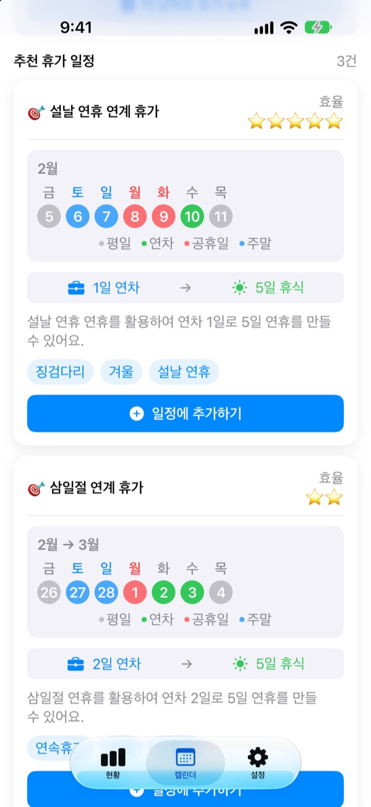
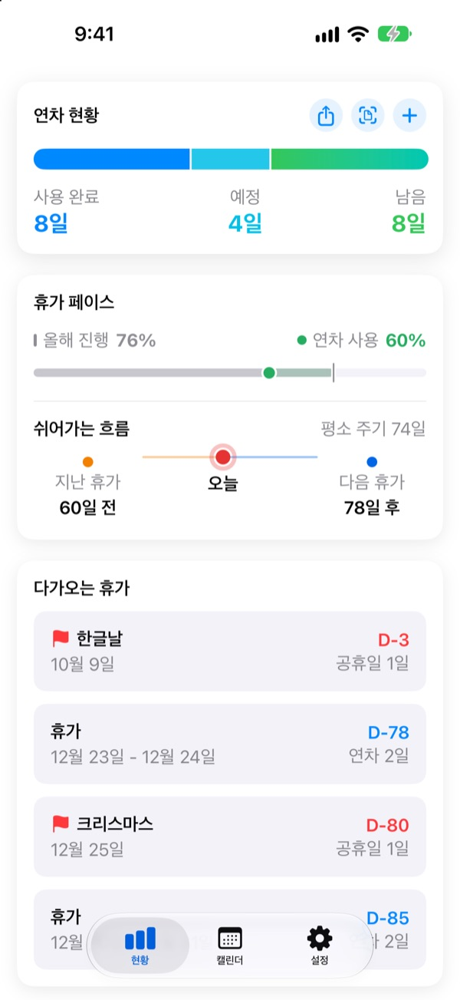
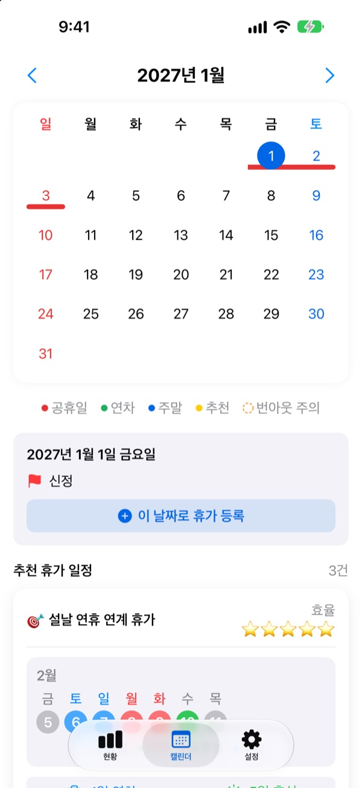
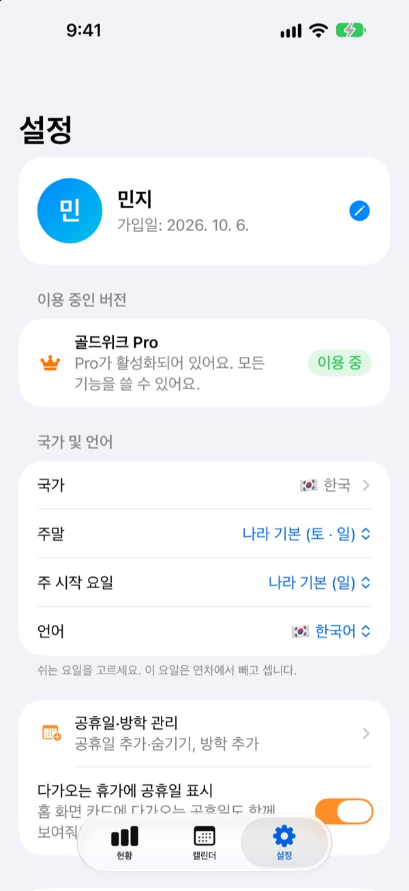

연차 하루로
닷새를 쉬어요
골드위크가 공휴일과 주말 사이 어디에 연차를 끼우면 가장 오래 쉴 수 있는지 찾아 드려요. 달력을 한 장씩 넘기며 세지 않아도 돼요.
무료로 받고, 연차 기록과 추천 보기는 계속 무료예요.

연차 며칠로 며칠 쉴 수 있을까요
쓸 연차 일수를 골라 보세요. 다가오는 공휴일 중에서 그 일수로 가장 길게 쉬는 연휴를 보여 드려요.
달력 넘기며 연차 계산하다 지친 적 있나요?
목요일이 공휴일이면 금요일 하루를 낼지, 다음 달 연휴 앞뒤에 붙일지. 달력을 몇 장씩 넘기며 세다 보면 결국 아무 날이나 쓰게 되고, 연말이면 남은 연차가 그냥 사라져요. 골드위크는 그 계산을 대신해서, 같은 연차로 더 길게 쉬는 날을 먼저 보여 줘요.
남은 연차가 한눈에 보여요
총 연차, 쓴 연차, 남은 연차를 한 화면에서 확인해요. 올해가 얼마나 지났는지와 연차를 얼마나 썼는지를 나란히 보여 줘서, 너무 아끼고 있지는 않은지 바로 알 수 있어요.
앱을 열지 않아도 홈 화면 위젯에서 남은 연차와 다가오는 휴가를 볼 수 있어요.

달력에서 바로 등록해요
공휴일, 연차, 추천 연휴가 달력 위에 색으로 표시돼요. 날짜를 누르면 바로 휴가를 넣고 고칠 수 있고, 반차와 반반차, 시간 단위도 기록돼요.
회사 휴가 내역 화면을 찍은 사진으로 지난 기록을 한 번에 불러올 수도 있어요.

내 나라, 내 근무 방식대로
한국과 일본, 미국, 유럽, 남미, 오세아니아까지 42개 나라의 공휴일이 들어 있어요. 주나 지역마다 공휴일이 다르면 내 지역을 고르고, 목록에 없는 나라는 공휴일을 직접 넣어 써요.
주말 요일과 한 주의 시작 요일, 고정 근무, 파트타임, 교대 근무도 고를 수 있어요.

시작은 세 단계면 돼요
- 1
나라와 연차를 알려 주세요
처음 열면 나라와 1년 연차 일수만 고르면 돼요.
- 2
추천을 골라요
캘린더 탭의 추천 휴가 일정에서 마음에 드는 연휴를 일정에 추가해요.
- 3
쓴 휴가를 기록해요
날짜를 누르거나 휴가 내역 사진으로 한 번에 넣어요.
이렇게 계산해요
- 연차
- 1일씩 빠져요
- 반차
- 0.5일 빠져요
- 반반차
- 0.25일 빠져요
- 시간 단위
- 하루 근무 시간에 맞춰 빠져요
- 병가 · 공가 · 출장
- 남은 연차에서 빼지 않아요
- 보너스 연차
- 대체휴무, 포상휴가처럼 따로 받은 휴가는 만료일과 함께 따로 관리해요 (프로)
연차 기준 시작월과 총 연차 일수는 설정에서 언제든 바꿀 수 있어요.
쉬는 습관은 무료, 계획을 맡기면 유료
무료
- 연차, 반차, 반반차, 시간 단위 기록과 남은 연차
- 42개 나라 공휴일, 내 공휴일과 방학
- 올해 추천 모두 보기, 그중 3개까지 일정에 추가
- 쉬는 간격 안내, 알림, 홈 화면 위젯
- 사진으로 휴가 등록
- iCloud 백업, 가족과 일정 함께 보기
플러스 · 프로
- 플러스: 최적 연간 휴가 플래너
- 플러스: 추천 무제한 추가, 지난해와 다음 해 추천
- 플러스: 캘린더 앱으로 보내기
- 프로: 플러스 전부와 보너스 연차, 종류별 연간 한도와 넘겨 쓰기
- 프로: 학교 달력 가져오기, 캘린더 자동 감지
- 프로: 함께 쉬기, 가족 기념일
칸마다 연간 구독과 한 번 결제하는 평생 이용 중에서 골라요.
연간 구독은 기간이 끝나기 24시간 전까지 끄지 않으면 자동 갱신돼요. 설정 > Apple 계정 > 구독에서 언제든 끌 수 있어요.
자주 묻는 질문
연차가 정확히 계산되지 않는 것 같아요.
설정에서 연차 기준 시작월과 총 연차 일수를 확인해 주세요. 반차(0.5일)와 반반차(0.25일)는 자동으로 빠지고, 병가, 공가, 출장처럼 차감되지 않는 유형은 남은 연차에 영향을 주지 않아요. 그래도 맞지 않으면 메일로 알려 주세요.
캘린더에 휴가가 표시되지 않아요.
취소한 휴가는 캘린더에 표시되지 않아요. 연차 관리 화면에서 그 기록의 상태를 확인해 주세요. 앱을 최신 버전으로 업데이트하면 해결되는 경우도 있어요.
보너스 연차는 어떻게 등록하나요?
현황 탭의 + 버튼으로 연차 관리 화면을 연 뒤 아래쪽 보너스 연차에서 추가해요. 대체휴무, 포상휴가, 리프레시 휴가 같은 유형을 고르고 일수와 만료일(선택)을 넣으면 돼요. 보너스 연차는 일반 연차와 따로 관리돼요.
구매했는데 기능이 열리지 않아요.
설정 탭 아래쪽의 구매 복원을 눌러 주세요. App Store에 로그인된 Apple 계정으로 구매 내역이 복원돼요. 그래도 안 되면 메일로 알려 주세요.
앱을 삭제하면 데이터가 사라지나요?
데이터는 기기에 저장되므로 앱을 삭제하면 모두 지워져요. iCloud 백업을 켜 두면 나중에 복원할 수 있는 사본이 남아요.
공휴일을 직접 추가하거나 숨길 수 있나요?
네. 설정의 공휴일·방학 관리에서 나만의 공휴일을 추가하거나 기본 공휴일을 숨길 수 있어요.
어느 나라를 지원하나요?
42개 나라의 공휴일이 들어 있어요. 설정에서 나라를 고르면(주나 지역마다 공휴일이 다른 나라는 지역까지) 캘린더에 바로 반영돼요. 목록에 없는 나라는 공휴일을 직접 넣어 쓰거나, 앱에서 피드백을 보내 지원을 요청할 수 있어요.
제 기록은 어디에 저장되나요?
입력한 내용은 기기와 내 iCloud에만 저장돼요. 개발자는 익명 사용 통계, 익명 오류 진단, 그리고 직접 보내신 피드백만 받아요.
해결되지 않는 문제, 기능 제안, 버그는 leeo@kakao.com로 보내 주세요. 보통 영업일 기준 1~2일 안에 답장드려요.